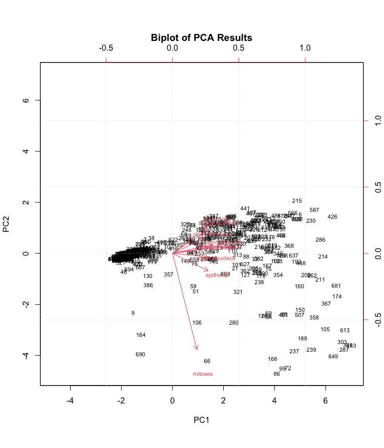

FINAL PROJECT
STAT 515 Final Project
Group Number: 2
Anusha Dusakanti, Kyle Wandel, Sumrah Shakeel
Abstract
The aim of this research is to identify patterns and indicators that could potentially predict the signs of malignant cancerous cells. Through meticulous analysis, the paper investigates various aspects, including a deep dive into the predictor variables and their relationship to each other and the response variable, the creation of various statistical models to predict cancerous cells and then finally a comparison of models to choose the best one. By scrutinizing these factors, this research hopes to make discovering breast cancer in patients easier and earlier.
I. Introduction
Among all cancers, breast cancer is one of the most prevalent worldwide. Even if the pharmaceutical sector has made significant investments in the search for a permanent cure for this cancer, it still raises the need for more analysis to be done on breast cancer data so that a cancerous tumor can be caught in the early stages. We intended to figure out whether distinct characteristics of the tumor cells may be used to predict the prospective appearance of breast cancer in females. With nine predictor variables and an outcome variable that would indicate whether the tumor is categorized as malignant (cancerous) or benign (non-cancerous), this dataset seemed promising.
The dataset we choose to perform this research is from Dr. William Wolberg and his clinical studies from 1989 to 1991. This dataset is very well known and highly integrable due to the amount of research conducted using this data. Below is a list and description of the 9 predictor variables and the 1 response variable (benormal).
clumpthickness: (1-10). Benign cells tend to be grouped in monolayers, while cancerous cells are often grouped in multilayers.
uniformcellsize (1-10). Cancer cells tend to vary in size and shape.
uniformcellshape (1-10). Cancer cells tend to vary in shape and size.
margadhesion: (1-10). Normal cells tend to stick together, while cancer cells tend to lose this ability, so the loss of adhesion is a sign of malignancy.
epithelial: (1-10). It is related to the uniformity mentioned above. Epithelial cells that are significantly enlarged may be malignant.
barenuclei: (1-10). This term is used for nuclei not surrounded by cytoplasm (the rest of the cell). Those are typically seen in benign tumors.
blandchromatin: (1-10). Describes a uniform “texture” of the nucleus seen in benign cells. In cancer cells, the chromatin tends to be more coarse and to form clumps.
normalnucleoli: (1-10). Nucleoli are small structures seen in the nucleus. In normal cells, the nucleolus is usually very small, if visible. The nucleoli become more prominent in cancer cells, and sometimes there are multiple.
mitoses: (1-10). Cancer is essentially a disease of uncontrolled mitosis.
benormal: (2 or 4). Benign (non-cancerous) or malignant (cancerous) lump in a breast.
II. Materials and Methods
The University of Wisconsin breast cancer data from William Wolberg has 699 observations and 10 variables, the first variable represents the ID of the sample and the last column “benormal” represents the classification/response variable (for benign, 4 for malignant).
To make the dataset ready for analysis we removed the ID column, checked and removed all rows with missing data changed the response variable values to malignant (4) = 1 and benign (2) = 0, then looked at summary statistics for each variable. For our sample there are 444 records that are identified as not being malignant (=0) and 239 records that are identified as being malignant (=1).
To identify if there were any patterns among the predictor variables in the dataset, first we looked at the correlations, histrograms and scatterplots of the variables using the pairs.panel() function.
Some of the variables showed correlations to each other, but none were deemed significant by the corr.test() function. We noticed many of the variables exhibited a right skew with their means larger than their medians. We could potentially log() the variables to make them more uniform.
Logistic Regression Model
We developed a logisitic regression model to predict if a cell was cancerous or not. As our outcome can only be one of two things (cell is malignant or benign) we should be using a classification model and logistic regression is a simple model which is much easier to set up and train initially than other machine learning models.
For the first model we used the cleaned dataset and all of the variables.
Model 1-

In this model the variables clumpthickness, margadhesion, barenuclei, blandchromatin were considered the only variables had a significant impact on the response variables with p-values less than 0.5. The overall model had an AIC of 122.89.
Next, we wanted to create a new model after logging our variables.
Model 2-
For this model the variables clumpthickness and barenuclei were considered the only variables that had a significant impact on the response variables with p-values less than .05. The overall model had an AIC of 127.02.
Based on the AIC of these two models, the non-logged model performed better. Now lets try and simplify the model.
Model 3-
As could be predicted, the model that included only the significant variables was worse at explaining the dataset. The complex model is definitely better than the simpler model, as demonstrated by the results of the Chisq test.
Finally, evaluating how accurate model_1 is at prediction by using confusion matrix-
Looking at the confusion matrix this is a very good model with high predictability for both false positives and negatives. The % chance the model falsely predicted cancer when not was 10/444 (2.2%) and the chance the model falsely predicted not having cancer when there was 11/239 (4.6%).
Decision Tree and Random Forest Modeling
Another modeling type we used for trying to predict whether a cell was cancerous or not was a random forest model. One of the biggest advantages of random forests is its versatility. It can be used for both regression and classification tasks, and it’s also easy to view the relative importance it assigns to the input features. One of the biggest problems in machine learning is overfitting, but most of the time this won’t happen thanks to the random forest classifier. If there are enough trees in the forest, the classifier won’t overfit the model.First, we looked at a decision tree model to determine the best spilt for node splitting. We did this by splitting the data into two sets, training and testing to train the model and then test its accuracy.
First, we looked at a decision tree model to determine the best spilt for node splitting. We did this by splitting the data into two sets, training and testing to train the model and then test its accuracy.